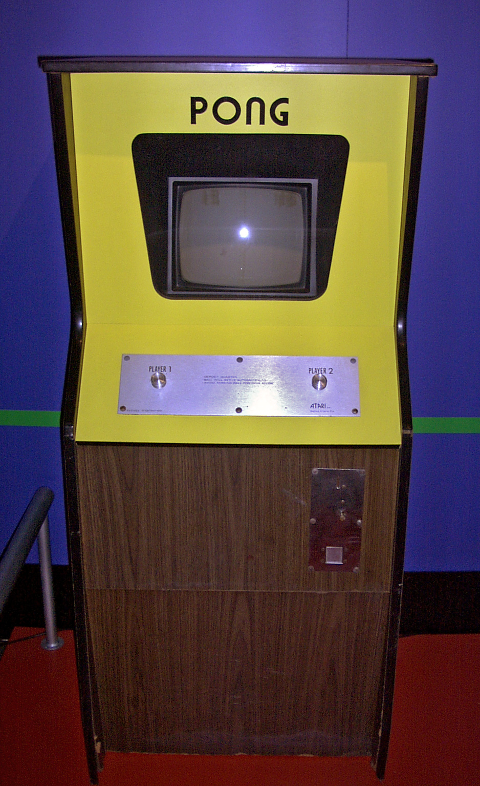
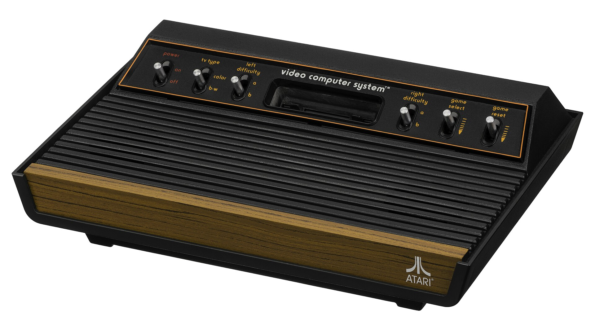
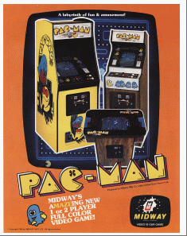

街机与家用游戏机的诞生（1970-1983）
雅达利与第一次游戏革命
1972
Atari 成立，发布世界首款街机游戏《Pong》，简单的乒乓球模拟游戏成为第一个商业成功的电子游戏
1975
《乓》家用版推出，成为第一款大规模生产的家用游戏机
1977
Atari 2600 发布，采用可更换卡带的设计，成为游戏机历史上的里程碑产品
1978-1980
《太空入侵者》(Space Invaders)、《吃豆人》(Pac-Man)等经典街机游戏推出，引发街机游戏热潮
1983
北美游戏业大崩溃，产业收入从35亿美元骤降至1亿美元，标志着第一次游戏革命的结束
1983年游戏业崩溃的原因:
- 市场过度饱和，低质量游戏泛滥
- 新兴个人电脑分流了游戏玩家
- 缺乏有效的质量控制和市场监管
- 《ET外星人》等重大商业失败项目
- 过度的硬件竞争导致消费者困惑

Pong 街机 (1972)

Atari 2600 (1977)

太空入侵者 (1978)

吃豆人 (1980)
雅达利的革命性贡献
- 创立了电子游戏产业的商业模式
- 推动了可更换卡带技术的普及
- 培养了第一代游戏开发者
- 将电子游戏从小众娱乐变为大众文化现象
4 / 16